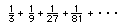

5. Patterns in infinite series
a. Coloring in squares (chapter 1)
b. Cookie-sharing (Brad's method-special scisssors) -chapter 2
c. Patterns in the area of squares
d. Convergent, divergent, limit of ('goes to')
e. As a name for a simple fraction (chapter 1)
f. As a name for an infinite repeating decimal (chapter 1)
g. Pi See Chapter 11 , e^x See Chapter 11, sin(x) and cos(x) in Chapter 11.
h. Find the distance a ball travels in bouncing, from being dropped until it stops bouncing (chapter 1)
j. Don's interpretation of Archimedes' method to find the area under a parabolic segment (chapter 13)
k. To find the area under curves (chapter 13)
l. To find the area and perimeter of the snowflake curve (chapter 4)
m. To find the area and perimeter of the Serpinski curve (chapter 4)
n. The harmonic series (chapter 5)
p. To write an infinite repeating decimal as an infinite series and a fraction (chapter 1).
q. Don's method of writing an infinite series for the area of a triangle.
r. Lizzy and Cheryl on infinite series
s. KatieR's pattern in the partial sums of the infinite series 1/2 + 1/4 + 1/8 + 1/16 ...
t. Jocelin, a 3rd grader, finds patterns in the infinite series 
u. Kaitlin gets 3 names for sharing 3 cookies between 5 people.
v. Katy's discoveries about infinite series
Back to Patterns in Mathematics
To order
Don's materials
Mathman home